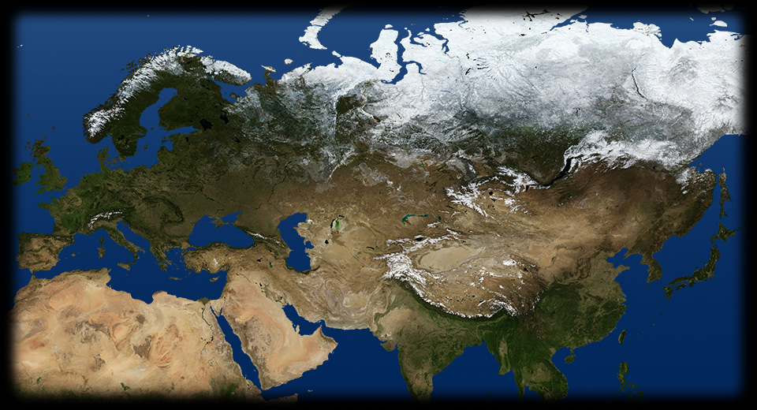

- 255 180
- 220 80
- 250 120
- 160 370
- 310 879
- 210 105
- 190 250
-
SARAJEVO
Il 28 giugno 1914 lo studente serbo-bosniaco Gavrilo Princip uccide a colpi di pistola il granduca Ferdinando, erede al trono d'Austria, e la moglie Sophie. L'episodio, all'origine della Prima guerra mondiale, ha grande eco in tutta Europa: qui ne vediamo un'illustrazione contemporanea realizzata da Achille Beltrame per il settimanale La Domenica del Corriere. MARNA
Nelle trincee lungo la Marna l'esercito francese arresta l'offensiva tedesca: in questo dipinto francese del 1917 vediamo una postazione di soldati prima dell'attacco.TRIPLICE ALLEANZA
Nel 1882 nasce la Triplice alleanza, che lega politicamente e militarmente l'Italia, l'Austria e la Germania.TRIPLICE INTESA
Nel 1907 Nasce la Triplice intesa tra Francia, Regno Unito e Impero russo in funzione antigermanica.GIAPPONE
Il 15 agosto 1914 Il Giappone si schiera a fianco dell'Intesa e coglie l'occasione per appropriarsi dei possedimenti tedeschi in Estremo Oriente. Lo lega alla Gran Bretagna un trattato del 1902.FRONTE OCCIDENTALE
Il 4 agosto 1914, seguendo il piano Schlieffen la Germania invade il Belgio e si dirige verso la Francia. Il 3 settembre 1914 il governo francese abbandona Parigi e si trasferisce a Bordeaux. L'esercito francese si dispone lungo le rive della Marna. Durante la battaglia della Marna, i francesi riescono a bloccare l'avanzata tedesca. L'esercito tedesco arretra. Alla fine del 1914 nelle Fiandre i tedeschi provano a isolare i francesi dagli inglesi, ma non riescono a sfondare le linee nemiche. Il fronte occidentale si assesta lungo una linea di trincee improvvisate di 750 km, dal mare del Nord al confine svizzero: ha inizio la guerra di logoramento. La flotta britannica inizia il blocco navale di rifornimenti alla Germania.FRONTE ORIENTALE
I tedeschi ritirano dal fronte occidentale alcune divisioni dell'esercito per mandarle a combattere contro la Russia, che aveva attaccato la Prussia orientale e costretto gli austriaci a evacuare la Galizia. I tedeschi riescono a fermare i russi. Nell'ottobre 1914 la Turchia si schiera con la Germania e l'Austria, costringendo i russi a dividere le forze su due fronti.